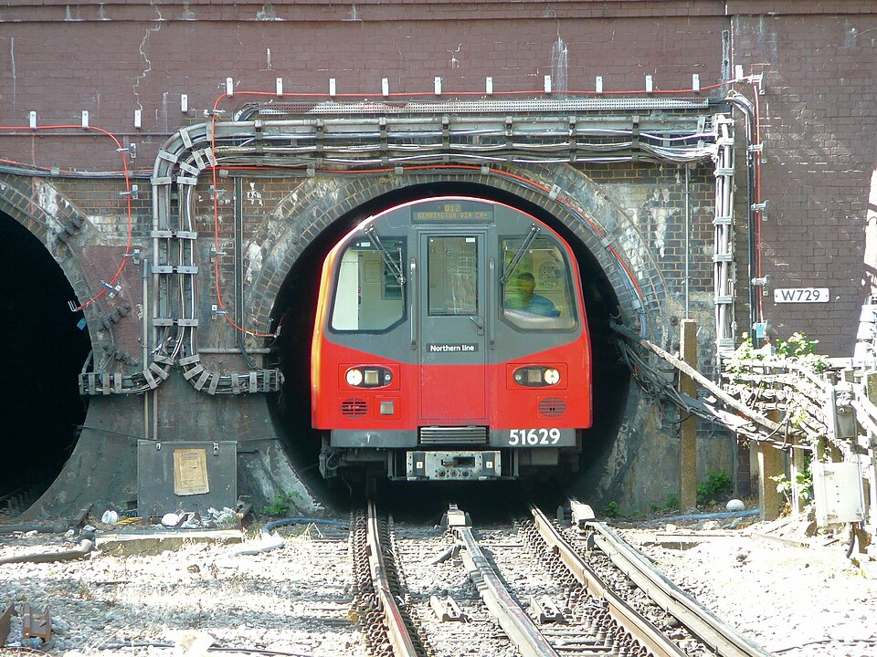

Метрополитен
Основное
Метрополите́н (от фр. métropolitain, сокр. от chemin de fer métropolitain — «столичная железная дорога»), метро́ (métro) — городская железная дорога с курсирующими по ней маршрутными поездами для перевозки пассажиров, инженерно отделённая от любого другого транспорта и пешеходного движения (внеуличная). Движение поездов в метро регулярное, согласно графику движения. Метро свойственны высокая эксплуатационная скорость (до 45 км/ч, а иногда и выше) и провозная способность (до 60 тыс. пассажиров в час в одном направлении).
Классификация
Большое разнообразие систем внеуличного скоростного городского и пригородного транспорта делает затруднительной их однозначную классификацию. Все определения метрополитена условны. В отношении многих транспортных систем можно с уверенностью сказать, что они являются (или, наоборот, не являются) метрополитенами, но в то же время существует ряд «пограничных» и «гибридных» транспортных систем.
Свойства
В мегаполисах со сложившейся застройкой линии метро, как правило, проложены под землёй и лишь иногда выходят на поверхность или на эстакады. Габариты и масса подвижного состава могут достигать железнодорожных стандартов, хотя обычно уступают им. Метропоезда насчитывают, как правило, 4—8 вагонов. Диаметр тоннелей достигает 4—7 метров (но во многих системах встречаются и более узкие тоннели, например в Берлине ширина узкопрофильных тоннелей — всего 2,3 метра), предельные уклоны больше, чем на железных дорогах общего назначения, но меньше, чем на трамвае, минимальные радиусы закругления значительно больше трамвайных.

Знаете ли вы, что…
- Метрополитен, включая лёгкое метро, действует более чем в 150 городах мира.
- В имеющем наибольшее в мире число метрополитенов Китае они есть уже в 46 городах, и ещё 9 городов их строят или планируют. В некоторые последние годы в стране открывалось до трёх новых метрополитенов ежегодно.
- Шанхайский, Пекинский и Нью-Йоркский метрополитены являются самыми крупными в мире, причём, в отличие от более чем вековой истории третьего, подавляюще бОльшие части двух первых были построены всего за последние 20 лет.
- Токийский, Сеульский, Шанхайский, Пекинский и Московский метрополитены — самые загруженные в мире по пассажиропотоку.
- Самые маленькие метрополитены на данный момент: иранский в Тебризе, венесуэльский в Маракайбо, индийский в Гургаоне и итальянский в Катании, а также мини-метро-пиплмуверы (в Детройте, Перудже, Венеции, Хайфе и др.).
Автор нескольких книг о метрополитене Роберт Швандль предлагает следующие определяющие признаки метрополитена:
- Используется в урбанизированной местности (в городах и городских агломерациях)
- Работает на электротяге
- Полностью отделена от любого другого движения
- Работает часто (с рабочим интервалом в дневное время не более 30 минут)
Материал взят из Википедии